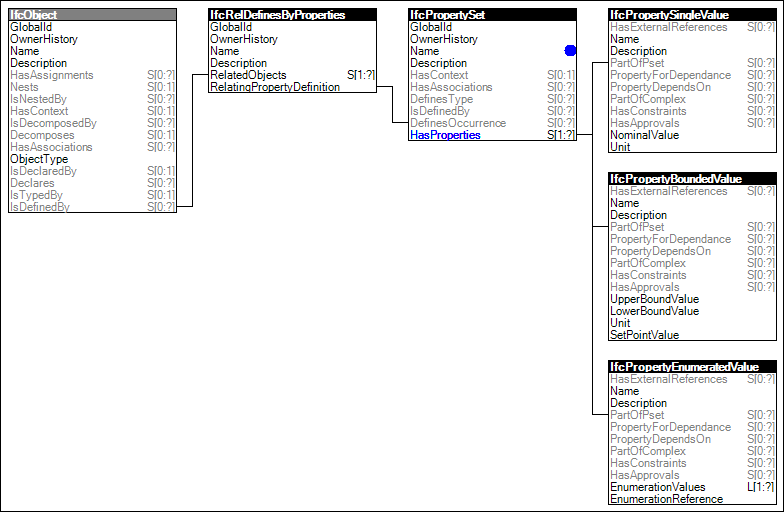

Link to this page
Link to this pageThe concept template Property Sets for Objects describes how an object occurrence can be related to a single or multiple property sets. A property set contains a single or multiple properties. The data types of an individual property are single value, enumerated value, bounded value, table value, reference value, list value, and combination of property occurrences.
Property sets can also be related to an object type, see concept Property Sets for Types. They then define the common properties for all occurrences of the same type. If the same property (by name) is provided by the same property set (by name), then the properties directly assigned to the object occurrence override the properties assigned to the object type.
Figure 9 illustrates an instance diagram.
 |
Figure 9 — Property Sets for Objects |